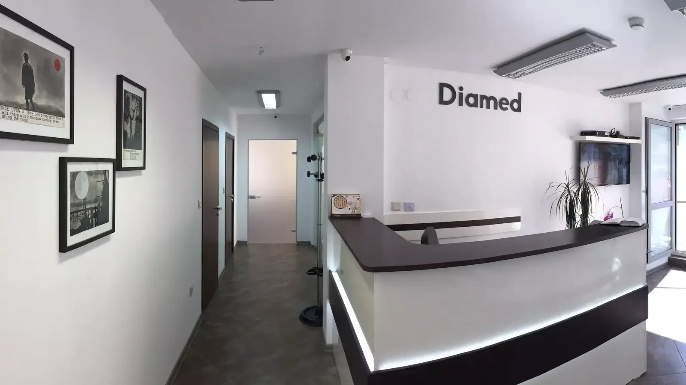
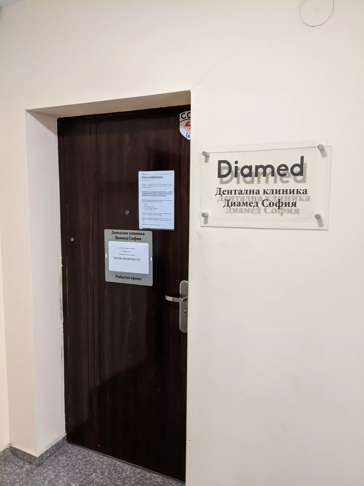

Офис в Младост 1
Клиниката е в офис сграда на ул. „Йерусалим“ 6, ет. 4, офис 12.
Зъболекар в Младост 1, София
Дентална клиника „Диамед София“ приема пациенти на ул. „Йерусалим“ 6, ет. 4, офис 12 — с фокус върху ясни обяснения, дентално лечение и диагностика.

Клиниката е в офис сграда на ул. „Йерусалим“ 6, ет. 4, офис 12.
Публичните отзиви отличават обясненията на разбираем език и спокойното отношение.
Публичните описания посочват рентгенова диагностика и Planmeca оборудване.
Дентална помощ
Сайтът не заменя консултацията. Най-сигурната следваща стъпка е обаждане за час и уточняване на конкретния случай.
Първична оценка и обяснение на възможните стъпки.
Лечение според индивидуалното състояние и нуждите на пациента.
Публичните източници посочват възможност за рентгенови снимки и 3D скенер.

Отзиви
„Благодарение на д-р Кондева и нейното отношение, децата ми ходят с удоволствие на зъболекар. Горещо препоръчвам!“
Gabriela Velichkova
„Доволен съм от д-р Десислава Иванова и нейния екип. Обяснява всичко на прост и разбираем език.“
Martin Bechev
Профилът има и критични публични отзиви; затова тук са използвани само конкретни писмени цитати, без преувеличени рейтинг твърдения.
Работно време
Framar посочва информационно време 08:00–20:00 и прием с предварително записан час 09:30–20:00. Google Maps показва отваряне във вторник 08:00.
Понеделник – Петък08:00 – 20:00
Приемс предварително записан час
Уикенднепотвърден
Адрес
Дентална клиника „Диамед София“
офис сграда, ж.к. Младост 1, ул. „Йерусалим“ 6, ет.4, офис 12, 1784 София
Телефон: 089 227 9079